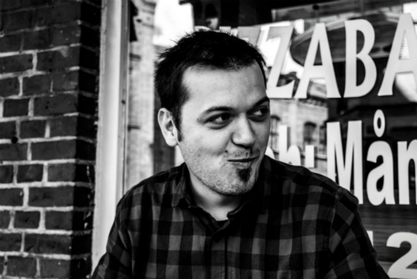

Jag heter Jasmin Bejtovic och är född och uppvuxen i Mostar, Bosnien-Hercegovina (när jag föddes 1978, hette landet Jugoslavien). Året 2007 flyttade jag till Eslöv, en liten stad i Skåne och här har jag bott sedan dess. Jag är 36 år gammal och bor tillsammans med min fru som heter Selma. Vi har inga barn, och inga husdjur heller. Redan under denna termin kommer vi att flytta i Malmö, och jag hoppas verkligen att flytten inte kommer att påverka mina studier.
Min utbildning och arbetslivserfarenhet
Mitt liv i Mostar
Min utbildning i kronologisk ordning ser ut som här:
Gymnasium utbildning
1996 avslutade jag Teknisk gymnasium i Mostar
Eftergymnasial utbildning
1997 påbörjade jag Civil ingenjör programmet på Universitetet i Mostar.Efter några år på detta program växte mitt intresse för IT samtidigt som jag tappade intresse för Civil Ingenjör utbildningen.
2001 påbörjade jag ett 2 års program på IT teknisk högskola i Mostar. Denna gång lyckades jag att ta högskoleexamen i IT teknik
Det ledde till att jag fick jobb år 2004 på ett IT företag som utvecklare av Windows desktop applikationer i Visual Basic 6.0. Förutom Windows Desktop applikationer fick jag en del erfarenhet i följande tekniker:
Databas hantering och design (MS SQL 2000)
Några små projekt med Interna webb platser i ASP.Net med Visual Basic som programmeringsspråk
Min erfarenhet av ASP.Net handlade mest om hantering av olika ASP.Net controls och trots att jag hade intresse för detta, fick jag aldrig en chans att utveckla mig ytterligare inom den. Redan då hade jag ett stort intresse för schack, och hela livet har jag kombinerat schack tävlingar med utbildning och jobbet.
Mitt liv i Sverige

Så här ser jag ut, när jag äter en pizza.
Året 2007 flyttade jag i Sverige, då jag var redan 29 år.Jag lärde mig språket rekordsnabbt, åtminstone tyckte lärarna så på SFI och Komvux då jag pluggade 2007 och 2008. I början av mina studier var det förvirrande för andra med tanke på att jag heter Jasmin och jag togs ofta för en kvinna. I mitt hemland är det ett killnamn. Under första året i Sverige fick jag några stora framgångar i schack, och jag tog beslutet att satsa på min karriär i schack. Min satsning belönades 2010, när jag lyckades nå en prestigefull titel, och blev Internationell Mästare. Några av mina framgångar i schack är i kronologisk ordning:
1999, Hercegovina mästare
2007, Lunds mästare, genom att vinna Lund Open 2007
2011, Seger i stor turnering Prague Open 2011
2011, Guld i svenska elitserien (lagtävling)
Sedan 2011 jobbar jag som schacktränare.
Om några är ytterligare intresserade av den aspekten av mitt liv, får de gärna besöka min blogg Chess and Life (dock, har jag slutat uppdatera den sedan ett halvt år tillbaks)
Mina Intressen
Några av mina fritidsintressen är:
Brinnande intresse för fotboll (inte bara det som händer på planen, utan hela den sociala aspekten och hur fotbollen påverkar samhället). Mina favoritklubbar i tur och ordning är:
F.K. Velez Mostar
Heart of Midlothian F.C. Edinburgh
Nothingham Forest F.C.
Resor
Fotografering (Jag är världens sämsta hobby fotograf)
Dokumentär filmer om historia
Mina förhoppningar
Under våren 2014 började jag fundera på att fortsätta jobba inom IT (mest för att jag tröttnade på livsstilen som schackspelare). Eftersom det redan är ett tag sedan jag jobbade med IT, tog jag beslutet att söka en utbildning på distans. När jag hittade Webbprogrammerare utbildning på LNU, fanns där inget dilemma. Sättet på hur distansutbildningen fungerar passar mig och kurserna som ges handlar om just detta som jag vill lära mig. Detta fick mig att söka utbildningen. Och nu är jag här...skriver en presentation om mig själv i den inledande kursen på programmet. Om två år hoppas jag att jag sitter på ett kontor och skriver kod som webbprogrammerare. Det som jag gärna vill jobba med är ASP.NET MVC eller ASP.NET WebForms, gärna någonstans i Malmö trakten.
Jag hoppas att ni har fått en lite bättre bild av vem jag är.